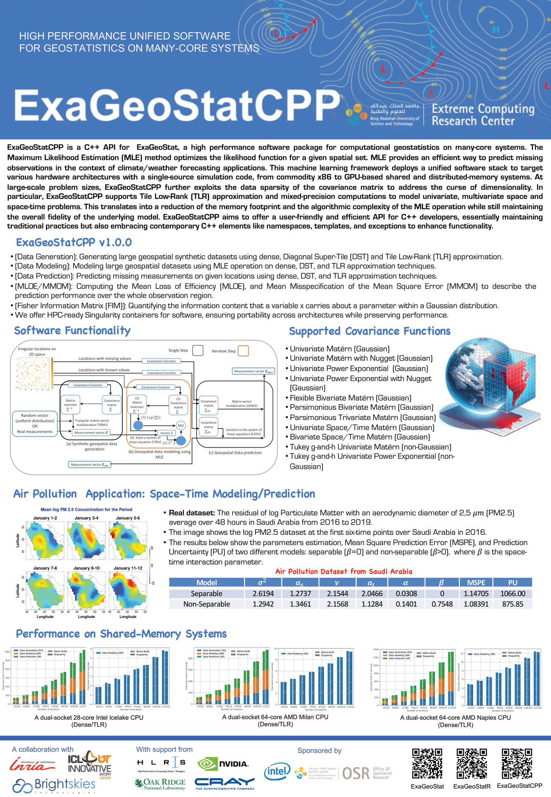

- Generated by
 1.9.1
1.9.1
|
ExaGeoStatCPP
ExaGeoStatCPP is a parallel high performance unified framework for geostatistics on manycore systems.
|
The Exascale GeoStatistics project (ExaGeoStat) is a parallel high-performance unified framework for computational geostatistics on many-core systems. The project aims to optimize the likelihood function for a given spatial data to efficiently predict missing observations in the context of climate/weather forecasting applications. This machine learning framework proposes a unified simulation code structure to target various hardware architectures, from commodity x86 to GPU accelerator-based shared and distributed-memory systems. ExaGeoStat enables statisticians to tackle computationally challenging scientific problems at large-scale while abstracting the hardware complexity through state-of-the-art high-performance linear algebra software libraries.
ExaGeoStatCPP is a C++ API for ExaGeoStat that aims to offer a user-friendly and efficient API for C++ developers, essentially maintaining traditional practices and embracing contemporary C++ elements like namespaces, templates, and exceptions to enhance functionality.
R is a powerful and versatile tool for scientific computing, offering a wide range of statistical and graphical techniques, strong community support, and the flexibility to integrate with other programming languages. Its open-source nature and extensive package ecosystem make it an invaluable resource for researchers and data scientists. Therefore, we decided to create ExaGeoStatR: An interface for functionalities provided by ExaGeoStatCPP to make use of R's various benefits.
The ExaGeoStat/ExaGeoStatCPP project is a collaboration between the KAUST Spatial Statistics group and the Extreme Computing Research Center (ECRC). Lies not in a new algorithm nor a new dataset, but in demonstrating the routine use of the larger datasets becoming available to geospatial statisticians, thanks to the implementation of state-of-the-art statistical algorithms on High Performance Computing (HPC) hardware.
We have built a standalone software framework (ExaGeoStat/ExaGeoStatCPP) that can run on a variety of hardware resources, including GPUs and massively distributed systems such as Shaheen-II, KAUST's Cray XC40 supercomputer, HLRS HPE Apollo (Hawk), ORNL Summit (OLCF-4) supercomputer, and Riken Fugaku supercomputer, to create a statistical model to predict environmental data (i.e., temperature, flow rates, soil moisture, wind speed, air pollution, etc.) at spatial locations on which data is missing, and to exploit large amounts of data to reduce the effect of individual measurement errors. The best-known methods for such statistical processing have a cost that grows rapidly in the size of the dataset, namely, in proportion to its cube or third power. Thus, increasing the size of the dataset by a factor of ten drives up the cost of the computation by a factor of a thousand while simultaneously driving up the memory requirements by a factor of a hundred.
For instance, according to this cubic growth in complexity, a computation that requires one minute would require nearly 17 hours on a dataset just ten times larger. This creates a computational strain on standard statistics software, for which contemporary data sizes were not anticipated, and even if possible, it puts the computation beyond the interactive attention span of the analyst. Parallelism (assigning thousands of processors to a single task) and Moore's Law allow leading-edge computers to handle such "big data" with ease, but the software bridge must be built. Furthermore, the software interface must resemble the interactive one with which working statisticians are familiar.
To summarize, the combination of emerging computing capabilities and emerging datasets promises significant advances in statistical analyses of environmental and many other phenomena. Such cross-disciplinary advances are natural at KAUST, so this relatively low-hanging fruit was ours to harvest earliest. Our roadmap now takes ExaGeoStat a step further on the algorithmic side by integrating tile low-rank matrix approximation. This low-rank matrix approximation permits the exploitation of the data sparsity of the operator with user-controlled numerical accuracy. This further expands practical problem sizes for statisticians with modest computational resources.
Note: Installation requires at least CMake of version 3.2. to build ExaGeoStatCPP.
To install the ExaGeoStat project locally, run the following commands in your terminal:
ExaGeoStatCPP project directory configure script with the flag -h for help, to know the supported options and their corresponding flags. clean_build.sh script with the flag -h for help, to know the needed arguments to run with your specific options. .bashrc file, e.g. Now, you can use the pkg-config executable to collect compiler and linker flags for ExaGeoStatCPP.
R command in the terminal, inside the prompt, we will install needed packages by running the following commands: For more detailed information on installing ExaGeoStat with different configurations and enabling technologies such as CUDA, MPI, R, etc., please refer to the User Manual
Please take a look at the end-to-end examples as a reference for using all the operations.
Find detailed information on how to contribute to ExaGeoStatCPP here
[BSD 3-Clause](LICENSE)
